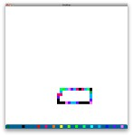
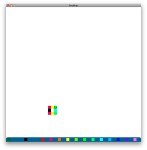
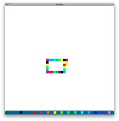

>I'm not sure what you mean by that; I think it already does what you are talking about... Care to elaborate a bit more, please?
$LOAD_PATH.unshift File.dirname(__FILE__)dump': no marshal_dump is defined for class Gosu::Color (TypeError)
from ./save.rb:16:in to_file'save_world'
from SongBugs.rb:57:in update'class Gosu::Color
def _dump(depth); [red,green,blue,alpha].join(";"); end
def self._load(data); Color.rgba(*data.split(";").map(&:to_i)); end
end
color = Gosu::Color.rgba(1, 2, 3, 4) #=> (ARGB: 4/1/2/3)
Marshal.dump(color) #=> "\x04\bIu:\x10Gosu::Color\f1;2;3;4\x06:\x06EF"
Marshal.load(Marshal.dump(color)) # => (ARGB: 4/1/2/3)
\004\bo:\rMap_File\006:\v@tiles[\006[\022u:\tTile\024A4;true;234;875u;\a\025As4;true;290;875u;\a\024B4;true;346;875u;\a\024C4;true;402;875u;\a\025Cs4;true;458;875u;\a\024D4;true;514;875u;\a\025Ds4;true;570;875u;\a\024E4;true;626;875u;\a\024F4;true;682;875u;\a\025Fs4;true;738;875u;\a\024G4;true;794;875u;\a\025Gs4;true;850;875u;\a\026rest;true;122;875o:
Map_File:@tiles[[u: TileA4;true;234;875u;As4;true;290;875u;B4;true;346;875u;C4;true;402;875u;Cs4;true;458;875u;D4;true;514;875u;Ds4;true;570;875u;E4;true;626;875u;F4;true;682;875u;Fs4;true;738;875u;G4;true;794;875u;Gs4;true;850;875u;rest;true;122;875
Powered by mwForum 2.29.7 © 1999-2015 Markus Wichitill